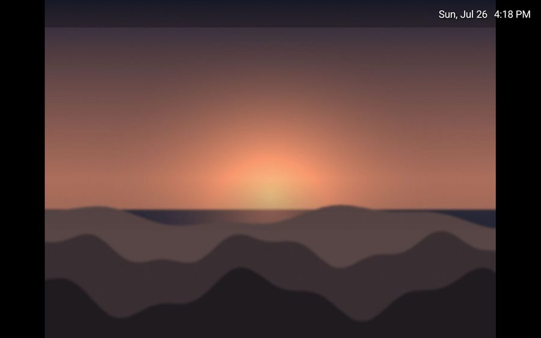
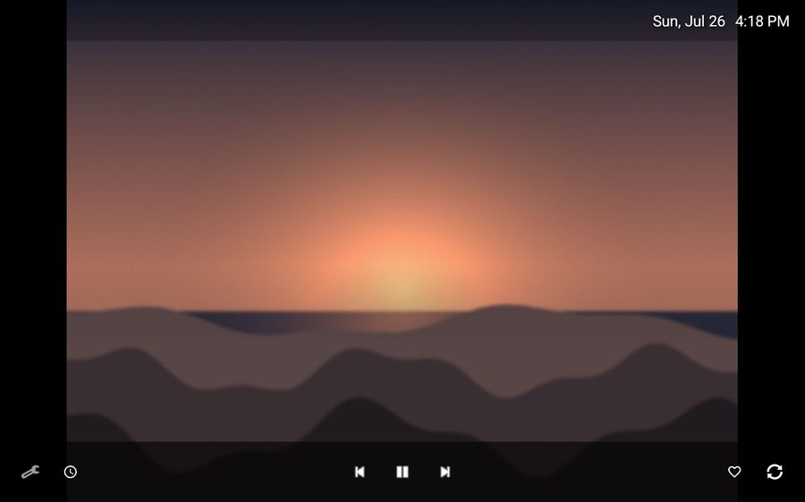
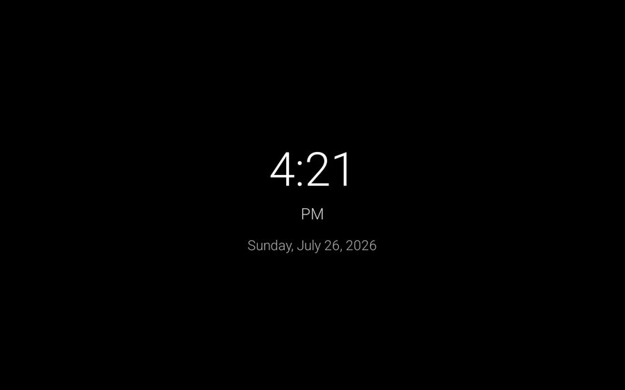
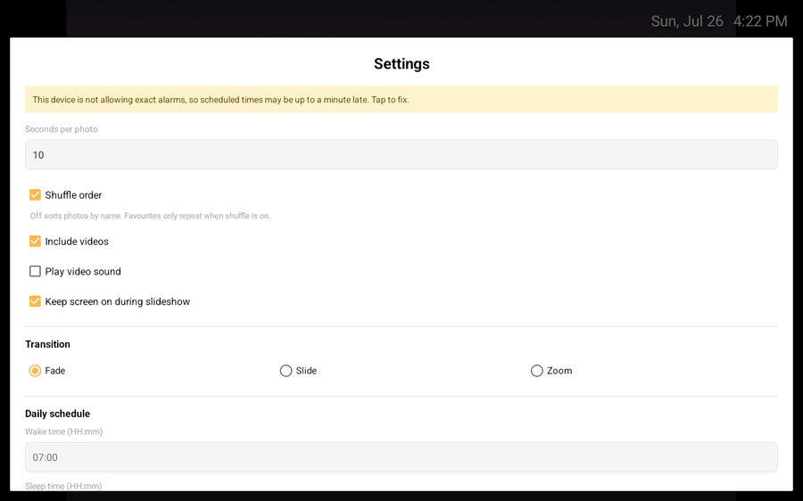

Shows one folder
Point it at a folder — internal storage, an SD card, a USB stick. It reads that folder and nothing else, and notices when you add photos to it.
Android 5.1 and up · 3.1 MB · GPL-3.0
It turns on. The battery is tired and the browser gave up years ago, but the screen is fine. RetroFrame makes it a photo frame — pointed at one folder, showing your photos, asking nothing of you.
No account. No cloud. No analytics. The app doesn't have the
INTERNET permission, so it can't phone home.
Live preview — that's the real clock. Tap the screen.
Before you install it
This build has never run on a physical tablet. It compiles, passes 30 unit tests, minifies cleanly and passes lint — but a green build only proves the code is well-formed, not that a 2014 storage provider behaves the way it assumes. It's published so that it can be tested.
Every known defect is written down in the open, including that one.
Point it at a folder — internal storage, an SD card, a USB stick. It reads that folder and nothing else, and notices when you add photos to it.
JPEG, PNG, GIF, WebP, HEIC. MP4, MKV, WebM, MOV — muted by default, played to the end, then it moves on.
Screen on at 07:00, big clock and screen off at 23:00. It restarts itself after a power cut, which is the failure mode a shelf device actually has.
Tap the heart and that photo comes around about three times as often — spaced out, so it never repeats back to back.
Fullscreen, no status bar, no navigation bar. Controls stay hidden until you touch the screen, then leave again.
The target is a 2015 tablet with slow storage and a single hardware video decoder, not a phone that happens to run it.
Captured on a 1280×800 tablet — the panel this app was written for.




Four steps, about ten minutes, most of which is finding the cable.
An SD card is ideal — it keeps them off the small internal storage, and you can pull the card out to change the collection later.
Copy it across and open it, allowing installation from unknown sources when asked. Or over USB:
adb install -r retroframe-v0.2.0.apk
RetroFrame opens the system folder picker on first launch. It keeps permission to that one folder — not to your files in general.
Tap the screen, open settings, set a wake and sleep time in 24-hour
HH:mm. Turn on auto-start so a power cut doesn't leave a black screen.
Then put it on a shelf and forget about it.
Heat kills batteries. A tablet permanently charging with a bright screen runs hot, and the battery will swell over months. Use the sleep schedule, turn the brightness down, give it air. If you can run it with the battery removed, do.
Turn off the lock screen, or the wake schedule lands on it instead of your photos.
Version 0.2.0 was a rewrite. The features didn't change; how they work did. These are the measurements that drove it.
setExactAndAllowWhileIdle arrived in API 23. The app's minimum is
API 22. Every scheduled alarm would have thrown on Android 5.1 — the oldest
version it claims to support, and the hardest to get hold of to test. Lint found it;
nothing else would have.
DocumentFile.listFiles() looks like one call. It queries for the child
IDs, then charges another round trip across a process boundary for every
property of every file. That's where the 1,500 calls came from — and it ran
on a timer.
Plenty of apps say they don't collect anything. This one doesn't declare the
INTERNET permission, so the operating system won't let it open a socket
even if a future contributor tried. The claim is checkable in the manifest.
Verify what you're installing
9ce964fb0b4e2ec9a2211e4a6dc0924236ae6f033e6d45ad55f5246f53d813e0
SHA-256 of the APK. Run sha256sum on the file you downloaded and
compare — or build it yourself from source and skip trusting anyone.